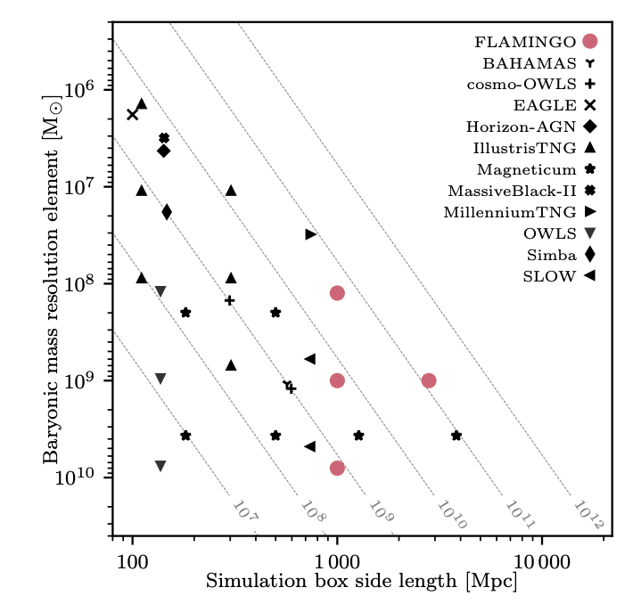

The study of galaxy formation throughout history has played a huge role in not only understanding our own galaxy, but the structure of the universe itself, with some of the earliest galaxies being formed around 300-400 million years ago after the Big Bang (Williams, 2025).
Its study has enabled scientists to explain the factors that contribute to it, such as galaxy collisions, which are capable of either tearing galaxies apart or merging them into larger galaxies (Sabia, 2023).
Researchers from the university of Leiden have recently developed a hydrodynamical simulation known as FLAMINGO to study galaxy formation, a hydrodynamical model that uses mathematical equations to study how particles interact with each other. Bearing in mind the implications of the findings of this model,
This paper aims to evaluate the use of hydrodynamical models in studying galaxy formation (Joop Schaye, 2023) using FLAMINGO as its main case study. The figures and the galaxy measurements produced by FLAMINGO as well as its accuracy will be discussed. Then, it will be followed by an assessment of its strengths and weaknesses related to it's data range and how well it performs compared to other simulations.
Finally, potential improvements to the model will be considered.
Introduction
Hydrodynamical simulations are incredibly powerful tools that have allowed scientists to research the origin of galaxies. It is a type of simulation that uses mathematical equations of gravity and gas dynamics
to show how galaxies form and evolve over time ((Galaxy Formation - Joseph Silk et al., 2013).
Methodology
To evaluate the use of hydrodynamical simulations in the context of galaxy formation, the model was tasked to resolve the stellar masses of galaxies using the galaxy stellar mass function,
a statistical method that measures the number of galaxies ranging from different stellar masses located in each volume of space by dividing the number of galaxies over the simulation volume (Anna K. Weigel, 2016).
This was then plotted against galaxy mass. The findings were compared to other simulations.

Fig.1 - Comparison of resolutions with solar masses for all the models (Joop Schaye, 2023).
Analysis and discussion
FLAMINGO has shown a sufficient degree of agreement with other observations for galaxy clusters produced by other computational models as shown in figure 1. The model was adequately calibrated to match the low-redshift mass function within a resolved range while also managing to study baryonic suppression,
reducing the clumps of normal mater within the universe.
However, the model faced limitations, particularly when using baryon particle masses of 10^8–10^9 M⊙, suggesting that predictions could not be as reliable when analysing low-mass galaxies such as dwarf galaxies (Joop Schaye, 2023).
Moreover, these figures suggest that the model was faced with a limited resolution, which could imply less accuracy when investigating star-forming regions.
Conclusion
This paper evaluated the use of computational models in the investigation of galaxy formation. Throughout the examined model, FLAMINGO, the most important factors such as baryonic masses and resolution were considered, which were then evaluated in the output given the model.
The results showed that although the computational model was relatively accurate when modelling galaxy clusters within a high stellar mass range, it struggled to provide a precise plot when dealing with a data range that it was not accustomed to, this being stellar masses lower than 10^8–10^9 M⊙ (Joop Schaye, 2023). Nevertheless, the data showed that it could be a reliable model for investigating galaxy formation when tuned with the right parameters despite its limitations compared to other computational models.
To improve the quality of the outputs for computational models in galaxy formation, a higher resolution and richer calibrations would resolve dwarf galaxies and galaxy interiors, which would then increase the data range that the model could be reliably used in (Roi Kugel, 2015).
This initiative would be ideal and highly considered by astrophysicists.